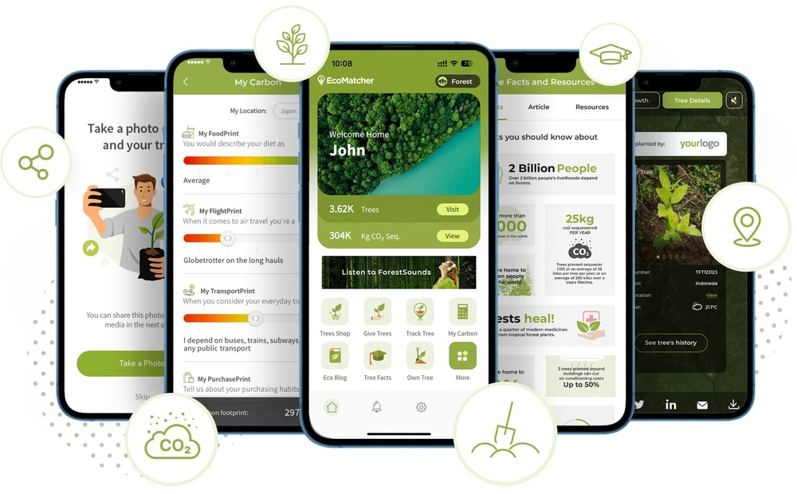

Founding and Early Years (2010-2012)
Core Green Softwares was founded in 2010 by a group of passionate software engineers with a vision to create innovative and sustainable software solutions. The founding team, consisting of John Doe, Jane Smith, and Michael Johnson, brought together their diverse expertise in software development, project management, and environmental sustainability. They shared a common goal: to build software that not only met the highest standards of functionality and user experience but also contributed positively to the environment.
Starting as a small startup in a modest office space, Core Green Softwares faced numerous challenges in its early years. The team focused on developing customized software solutions for small and medium-sized enterprises (SMEs), gradually building a reputation for delivering high-quality, reliable, and eco-friendly products. The company's commitment to sustainability was evident from the beginning, with initiatives such as using energy-efficient servers and promoting remote work to reduce carbon footprints.
Growth and Expansion (2013-2017)
As Core Green Softwares gained recognition in the industry, the company began to expand its client base and service offerings. In 2013, the company launched its first flagship product, GreenERP, an enterprise resource planning system designed to help businesses streamline their operations while minimizing their environmental impact. GreenERP was well-received by the market, leading to rapid growth in both revenue and workforce.
Between 2014 and 2017, Core Green Softwares expanded its operations globally, opening offices in Europe and Asia. The company also began to diversify its product portfolio, introducing solutions in areas such as cloud computing, artificial intelligence, and big data analytics. Despite its rapid expansion, the company remained committed to its core values of sustainability and innovation. This period also saw Core Green Softwares forging strategic partnerships with leading technology firms, further enhancing its capabilities and market reach.
Innovation and Sustainability (2018-Present)
In 2018, Core Green Softwares took a significant step forward by establishing the Green Innovation Lab, a dedicated research and development center focused on creating cutting-edge technologies with a positive environmental impact. The lab has since been at the forefront of numerous breakthroughs, including advancements in green cloud computing and AI-driven energy management systems.
The company's dedication to sustainability was further demonstrated in 2019 when it achieved carbon-neutral status, offsetting its emissions through various environmental projects and adopting green practices across all its offices. Core Green Softwares also introduced the EcoSoftware Initiative, a program aimed at helping other tech companies reduce their environmental footprint by adopting sustainable practices and technologies.
In recent years, Core Green Softwares has continued to innovate, launching products like GreenAI, an artificial intelligence platform designed to optimize energy usage in data centers, and EcoCRM, a customer relationship management tool that integrates sustainability metrics into business processes. The company's efforts have been recognized with numerous industry awards and certifications, solidifying its position as a leader in the green tech space.
Community Engagement and Corporate Social Responsibility
Core Green Softwares believes in giving back to the community and has been actively involved in various corporate social responsibility (CSR) initiatives. The company sponsors educational programs aimed at promoting STEM education among underprivileged children and runs an annual Green Tech Scholarship for students pursuing careers in environmentally sustainable technologies. Additionally, Core Green Softwares employees are encouraged to participate in volunteer activities, such as tree planting drives and community clean-up projects.
The Future of Core Green Softwares
Looking ahead, Core Green Softwares aims to continue its growth trajectory while staying true to its founding principles of sustainability and innovation. The company is exploring new frontiers in technology, such as quantum computing and blockchain, with the potential to create even more efficient and eco-friendly solutions. By fostering a culture of continuous improvement and environmental stewardship, Core Green Softwares is committed to shaping a greener, more sustainable future for the tech industry and the world.
Core Green Softwares' journey from a small startup to a global leader in green technology is a testament to the power of vision, innovation, and dedication. As the company moves forward, it remains steadfast in its mission to create software that not only drives business success but also contributes to a healthier planet.